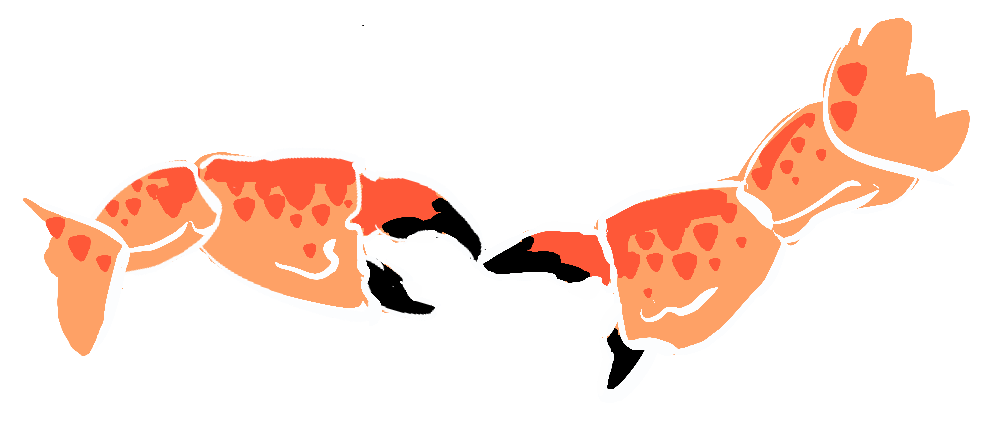

CRABS IN A BUCKET
~ or links in a chain? ~
According to some highly authoratitive anecdotal accounts, when a lone crab is placed in a bucket it will crawl out of its own accord but put a pile of crabs in a bucket and they will pull each other down in an attempt to escape, dooming them all. This is a classic illustration of a negative-sum game, and these games, as the name implies, are just the worst.
There are two ways of looking at this illustration • • •
- Similar to Tall Poppy Syndrome whereby people are pulling others down to their level, purely out of spite or to make themselves feel better relative to others.
- A Moloch-y system whereby the narrow individual imperative to escape results in an incentive to use others to climb out, which results in no one escaping.
A counterpoint to this illustration could be a situation where crabs (which are quite capable of holding on to each other) could form a ladder, and then a sort of rolling chain to enable the escape of everyone.

Sometimes we are told that acting in our own narrow self-interest is natural or even good. Crabs in a bucket illustrates that in many situations narrow self-interest is counter-productive and that thinking about our own position relative to others can leave everyone worse off.
AN EXAMPLE FROM HISTORY
As a child I was horrified by the Hillsborough Disaster^ where overcrowding at an FA Cup semi-final resulted in a massive human crush as panicked Liverpool supporters tried to escape. I remember my dad trying to explain to me how almost 100 people could be crushed and killed by accident (the breakdown of systems and the ills of groupthink are subjects for another time).
Adding to the tragedy, over the succeeding years, the public saw another example of crabs in a bucket as authorities, media and management attempted to evade responsibility by each blaming the other and the victims.
WHAT ABOUT YOU?
No doubt you've found yourself in situations where someone has pulled you down to get ahead? Perhaps you've fallen prey to zero-sum thinking yourself, assuming it's you or them? Sometimes it might seem like we're all crabs in a bucket.
But how often does the opposite happen? Where humans support each other to achieve win-win scenarios? How often do fellow employees turn up to work regularly, drivers stop at red lights, customers provide free word-of-mouth advertising for businesses, not to mention all the support families provide for each another?
Let us know in the comments below of your own experiences being trapped in a bucket or escaping one!

While the concept of crabs in a bucket can help us to anticipate the negative outcomes of zero-sum thinking, it's important to remember - we are not crabs! Through recognising that others don't operate selfishly most of the time, we can exercise greater trust in one another and climb out of them buckets together.